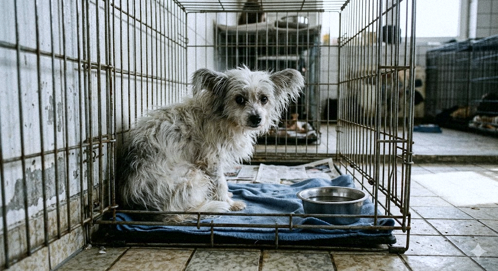
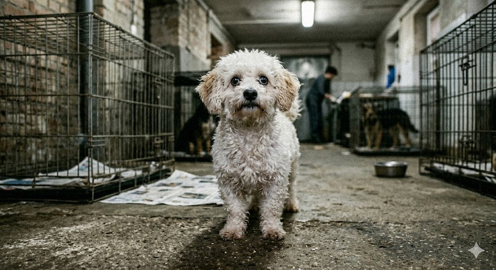
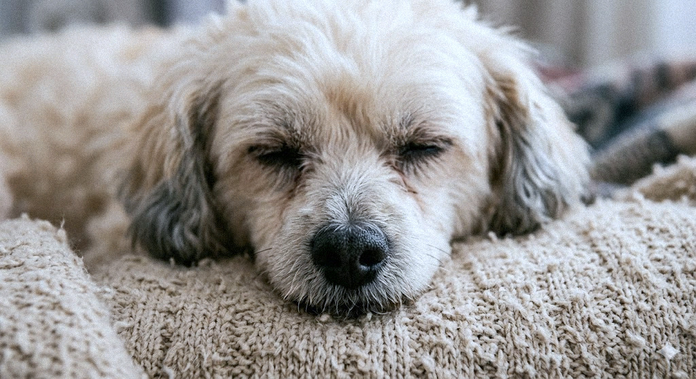
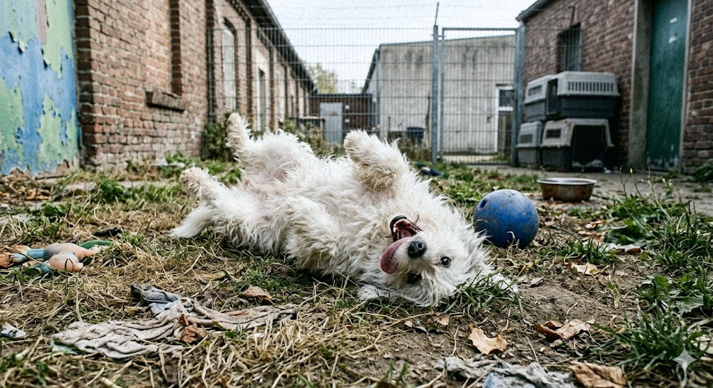
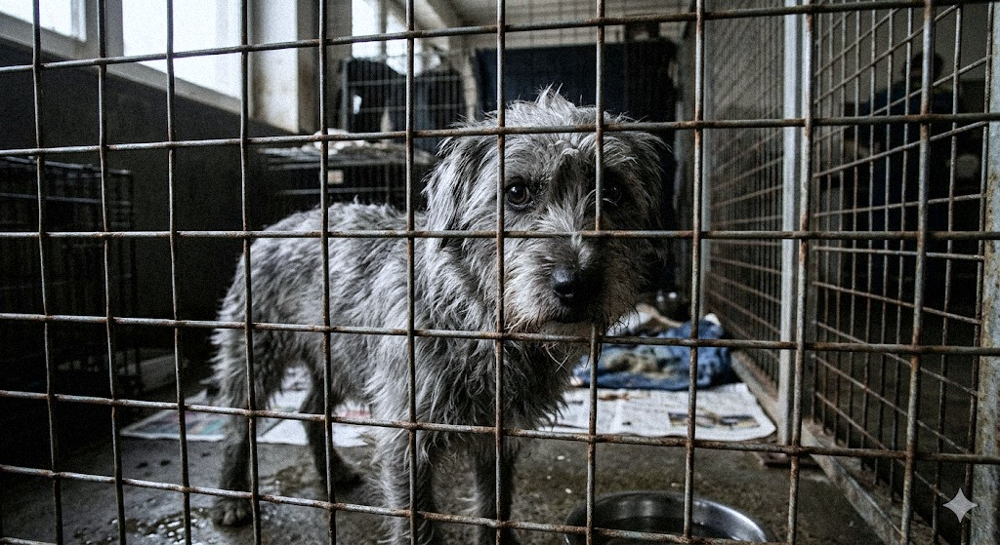

Unsere Hunde

Luna wurde im Zuge einer Sicherstellung aufgenommen. Sie zeigt sich in neuen Umgebungen derzeit noch unsicher und schreckhaft bei schnellen Bewegungen.
Sie braucht Zeit, Sicherheit und Geduld. Für eine Familie, die Geduld mitbringt, wird sie zur treuen Begleiterin.

Buddy ist ein aktiver, aufgeschlossener Rüde, der rassetypisch viel Beschäftigung einfordert. Er beherrscht die Grundkommandos, zeigt aber bei Hundebegegnungen noch Unsicherheiten.

Oskar ist ein ruhiger Senior, der altersbedingt nicht mehr den größten Bewegungsdrang hat. Er ist stubenrein und kann stundenweise alleine bleiben.

Fibi ist eine junge, agile Hündin mit hohem Energielevel. Sie zeigt sich bei uns lernwillig und ist bereits leinenführig. Aufgrund ihres jungen Alters braucht sie klare Führung.

Max wurde abgegeben, da die Vorbesitzer ihm zeitlich nicht gerecht werden konnten. Er ist ein verschmuster Hund, der aber territoriale Ansätze zeigt.
Duke war ein scheuer Straßenhund, der bei uns Vertrauen zu Menschen aufgebaut hat. Mit viel Geduld und Training ist er zu einem wundervollen Begleiter geworden.

Molly war eine unterernährte und verletzte Hündin, die wir von einem Vermehrerhof retteten. Nach Wochen der Pflege und Rehabilitation hat sie wundervolle Menschen gefunden.